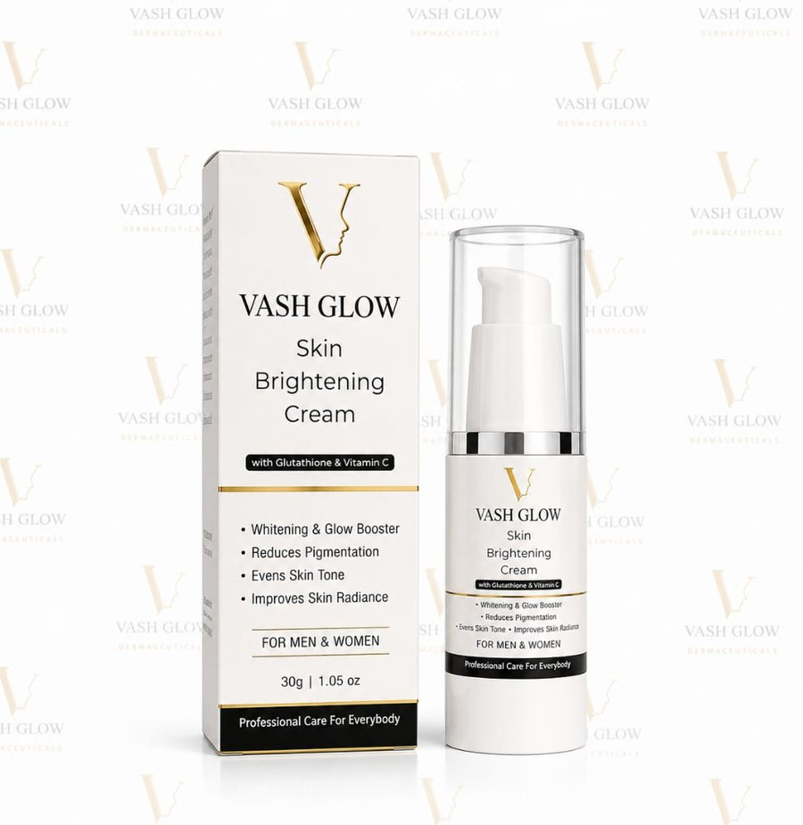
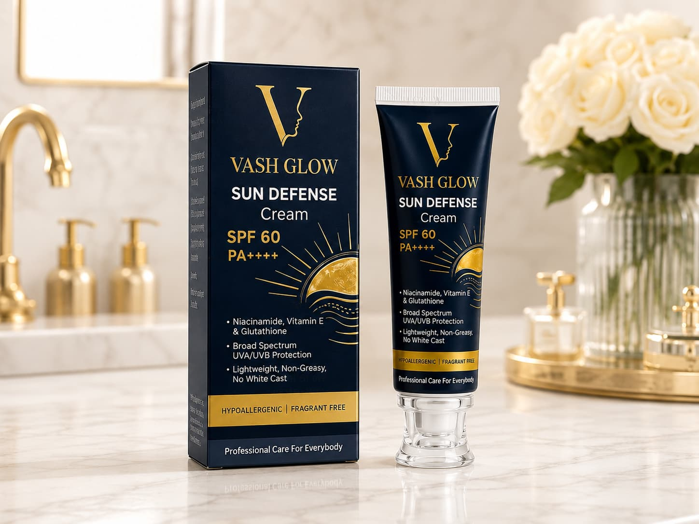

How to Treat Pigmentation & Dark Spots: A Step-by-Step Skincare Guide
Dark spots, post-acne marks and uneven skin tone are common skincare concerns. They can develop due to sun exposure, inflammation after acne, hormonal changes and other skin conditions. Understanding the cause of discoloration is an important first step toward choosing the right skincare approach.
A consistent routine, appropriate sun protection and carefully selected skincare ingredients may help improve the appearance of some dark spots over time. However, different types of pigmentation respond differently, and no single cream can guarantee the same results for everyone.
In this guide, we explore common causes of pigmentation, the science behind popular brightening ingredients, a practical morning and evening routine, and how to choose skincare products that suit your needs.
What Is Skin Pigmentation?
Skin colour is partly determined by melanin, a pigment produced by specialised cells called melanocytes. Pigmentation concerns arise when areas of the skin develop a darker appearance or uneven distribution of colour.
The term pigmentation can refer to several different concerns, including post-acne marks, sun-related spots and melasma. Although these conditions may look similar, their causes and treatment approaches can differ.
Understanding your skin concern helps you make more informed decisions about skincare ingredients and when professional advice may be necessary.
What Causes Dark Spots and Uneven Skin Tone?
1. Post-Acne Marks
After acne or another inflammatory skin condition heals, flat dark marks may remain. This is known as post-inflammatory hyperpigmentation.
Picking, squeezing or repeatedly irritating blemishes can increase the risk of marks. A gentle routine, appropriate acne care and sun protection can help support the skin while these marks gradually fade.
2. Sun Exposure
Ultraviolet radiation can contribute to discoloration and make existing dark spots more noticeable. Regular sun protection is therefore an important part of a routine focused on uneven skin tone.
3. Melasma
Melasma can cause brown or grey-brown patches, often on the cheeks, forehead and upper lip. Hormonal changes and light exposure may contribute to this condition.
Melasma can be persistent and may require professional assessment. A cosmetic brightening cream should not be presented as a guaranteed treatment for melasma.
4. Irritation and Skin Inflammation
Harsh scrubs, irritating products and unsuitable home remedies can damage the skin barrier or cause inflammation. In some people, inflammation may lead to additional discoloration.
A gentle, consistent routine is generally preferable to aggressive exfoliation or using many active ingredients simultaneously.
Which Skincare Ingredients May Help With Pigmentation?
Different ingredients serve different roles in a skincare formula. Their effectiveness depends on the ingredient form, concentration, stability, formulation and individual skin response.
Niacinamide
Niacinamide, a form of vitamin B3, is used in skincare to support the skin barrier and improve the appearance of uneven skin tone. It can be a useful ingredient in routines designed for a more even-looking complexion.
Alpha Arbutin
Alpha arbutin is used in brightening formulations designed to address the appearance of dark spots. Its performance depends on the overall formulation and consistent use.
Vitamin C
Vitamin C is an antioxidant used in skincare to help protect against oxidative stress and support brighter-looking skin. Different forms, including ethyl ascorbic acid and L-ascorbic acid, have different formulation and stability considerations.
Glutathione
Glutathione is an antioxidant found in some skincare formulations. Its potential topical brightening benefits depend on the formulation, and evidence does not justify promising guaranteed pigmentation removal.
Licorice Extract
Licorice-derived ingredients are used in some skincare products designed for uneven-looking skin tone. Their effects depend on the extract, formulation and product use.
Kojic Acid Derivatives
Kojic acid derivatives, including kojic acid dipalmitate, are used in certain brightening formulations. Their performance should be assessed in the context of the complete product rather than inferred from the ingredient name alone.
Hydration-Supporting Ingredients
Glycerin and hyaluronic acid help attract and retain moisture, while vitamin E is used in skincare for its antioxidant properties. Hydration-supporting ingredients can complement a routine focused on skin comfort and appearance, although hydration alone does not remove pigmentation.
How to Build a Simple Pigmentation-Focused Skincare Routine
Protect Your Skin
- Gentle cleansing. Use a cleanser suited to your skin type. Avoid harsh scrubbing or excessive cleansing that leaves the skin feeling tight or irritated.
- Moisturise. Apply a suitable moisturiser if needed to support skin comfort and hydration.
- Apply sunscreen. Choose a broad-spectrum sunscreen with SPF 30 or higher. Apply it according to the label and reapply approximately every two hours when outdoors, as well as after swimming or heavy sweating.
Shade, protective clothing and a hat can provide additional protection. For melasma-prone skin, a dermatologist may recommend a tinted sunscreen containing iron oxides for additional visible-light protection.
Keep It Consistent
- Cleanse gently. Remove sunscreen, oil and daily impurities without irritating your skin.
- Apply a suitable brightening product. Choose a product appropriate for your skin and follow its directions. Introduce new active products gradually instead of combining several unfamiliar formulas at once.
- Moisturise. Finish with a suitable moisturiser if needed to support skin comfort.
Patch-test new products according to their instructions. Discontinue use if significant irritation develops.
Meet Vash Glow Skin Brightening Cream

Skin Brightening Cream
A multi-ingredient approach to brighter-looking skin.
When choosing a brightening cream, looking beyond a single hero ingredient can help you understand the overall formulation. Vash Glow Skin Brightening Cream features a blend of brightening-focused ingredients, including niacinamide, alpha arbutin, glutathione, ethyl ascorbic acid, L-ascorbic acid, licorice extract and kojic acid dipalmitate.
The formula also includes hydration-supporting ingredients such as glycerin and hyaluronic acid, alongside vitamin E.
Understanding the Vash Glow Formula
Vash Glow Skin Brightening Cream combines several brightening-focused ingredients with hydration-supporting components. Niacinamide and alpha arbutin are commonly used in formulations targeting uneven-looking skin tone, while vitamin C derivatives and licorice extract contribute to the formula's brightening-focused approach. Glycerin and hyaluronic acid help support skin hydration.
The performance of the finished product depends on the full formulation, ingredient concentrations, stability and individual skin response. Review the complete ingredient list and follow the product directions to determine whether it fits your routine.
- Multiple brightening-focused ingredients in one formula.
- Hydration-supporting ingredients alongside brightening actives.
- An option to consider in an evening skincare routine.
- Ingredient information to help you make an informed choice.
Together, these ingredients make the cream an option to explore for a skincare routine focused on dullness and uneven-looking skin tone. Individual results depend on the formulation, skin condition, consistency and sun exposure; no single product can guarantee the removal of every type of pigmentation.
How to Include It in Your Routine
Apply the cream at night according to the current product label. Introduce it gradually, patch-test before first use and discontinue if irritation occurs.
During the day, use a broad-spectrum sunscreen and follow its application and reapplication instructions. Sun protection is an essential part of caring for pigmentation-prone skin.
Why Pair Your Routine With Sun Protection?
A brightening-focused routine should not stop at a night-time cream. Sun exposure can contribute to the development or worsening of dark spots, making daily sun protection an important complementary step.

Sun Defense Cream SPF 60 PA++++
Vash Glow Sun Defense SPF 60 can be explored as a product option for daytime sun protection. Check the current product label for its protection claims, application instructions and reapplication guidance.
View Product Details →Using sunscreen does not guarantee that pigmentation will disappear, but appropriate sun protection can help reduce further UV-related darkening.
Common Skincare Mistakes to Avoid
UV exposure can worsen uneven skin tone and undermine a consistent routine.
Changes in the appearance of dark spots often take time, and some conditions require professional treatment.
Combining multiple products can increase irritation without guaranteeing better results.
Harsh scrubbing and irritating home remedies may worsen inflammation and discoloration.
Not every dark spot is ordinary pigmentation. New, changing or unexplained spots should be assessed by a qualified healthcare professional.
Frequently Asked Questions
How long does pigmentation take to fade?
There is no universal timeline. Some post-acne marks may gradually fade over several months, while melasma and other forms of pigmentation can be more persistent. Results depend on the cause, treatment and individual skin response.
Can a brightening cream remove every type of dark spot?
No. Different types of pigmentation have different causes and may respond differently to skincare. A brightening cream may help improve the appearance of some marks, but it cannot guarantee removal of every type of discoloration.
Can I use Vash Glow Skin Brightening Cream every night?
Follow the current product label. If you are new to the product, introduce it gradually and monitor your skin's response. Stop use if significant irritation develops.
Is a product with more brightening ingredients always better?
No. The overall formulation, ingredient concentrations, stability, compatibility and tolerability matter. More ingredients do not automatically mean better results.
When should I consult a dermatologist?
Seek professional advice if pigmentation is persistent, worsening, widespread or unexplained. Any new or changing spot, especially one that bleeds or does not heal, should be assessed promptly.
Should I use a brightening cream without sunscreen?
Sun protection is an important part of a pigmentation-focused routine. UV exposure can worsen some types of discoloration, so use a broad-spectrum sunscreen during the day and follow its application and reapplication instructions. A brightening cream does not replace sunscreen.
Skincare, step by step, with Vash Glow
Understanding your skin, choosing suitable skincare products and protecting it from excessive sun exposure are important steps toward a more even-looking complexion. Review the ingredients, directions and precautions before choosing whether Vash Glow Skin Brightening Cream suits your needs.
Disclaimer: This article provides general skincare education and is not a substitute for professional medical advice, diagnosis or treatment. Product results vary. Always check the product label, follow directions and consult a qualified dermatologist for persistent or concerning skin changes.